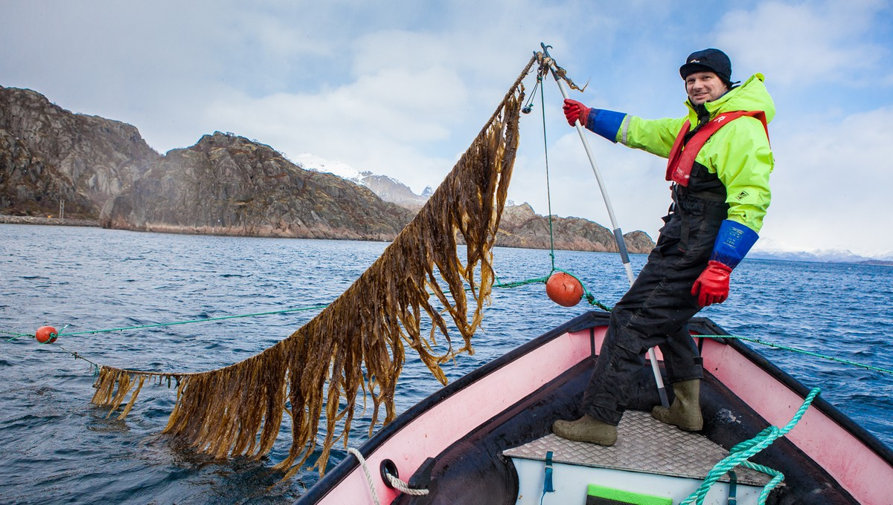

Lofoten Blue Harvest is a seaweed company based in Norway. The company is focusing on building better farms, making better equipment and developing better protocols for handling seaweed both on land and at sea. In this chat I spent time with Nikolai Buer, the CEO.

What was the motivation behind creating Lofoten Blue Harvest?
I've always been attracted to tackling difficult problems and building something in a new industry is really exciting. There is so much to discover here so I jumped at the opportunity. I've loved learning about the role of algae in the development of the planet. Shaping this knowledge into real business solutions is extremely rewarding.
Can you outline your process for addressing the challenges you've encountered?
In essence, at the low-level in seaweed farming the challenges you encounter are largely practical. As a result, it is quite straight-forward to start with a simple concept and then work your way through the problem-chain. After that, things change. For us, at a certain point the business grew to a point where we needed help. We needed to cooperate with people at different points in the value-chain and that process has been great.
Is the food industry the main sector Lofoten Blue Harvest is targetting?
Yes- it has to be food at the moment for various reasons as we develop our processes and production.

Where do you see the seaweed industry going in the next 10-15 years?
We are going to see seaweed in all kinds of store products in the near future. At the moment the volumes are small and the applications are limited but we are getting there. For us specifically, creating interest is the most exciting thing because we are very enthusiastic about our product. It's a whole new way of producing food where we use sea area not land, it's sustainable, we don't displace anything and the farming of seaweed doesn't affect the biosphere.
"We are going to see seaweed in all kinds of store products in the near future. "
For Lofoten Blue Harvest the focus is on production right now. Every important decision-maker in the value chain is interested and engaged in this so the potential is there. You can feel the interest simmering under the surface.
What's your advice for learning in this field?
Most of my learning has come from talking to people. Literature is great for a lot of historical information but first-hand talking to people has been the way for me. Travelling, building networks and going to conferences has been excellent.
What advice might you give to your younger-self or someone else on this path?
Be patient and learn as much as you can. People are looking more and more at this, consumers are looking at this and there is more motivation. You can't control the direction but you can control your positioning and the information that you acumulate.